MANTENIMIENTO Y REPARACIÓN
servicio con vehículo en marcha
PROCEDIMIENTOS DE SERVICIO GENERALES DEL SISTEMA A/C
Sustitución de juntas tóricas.
Importante: Aunque las juntas tóricas puedan parecer idénticas, es muy importante que se utilicen sólo las juntas tóricas de repuesto recomendadas para el A/A o, de lo contrario, pueden producirse excesivas fugas de refrigerante.
Importante: Deslice siempre la junta tórica sobre la pestaña del tubo para garantizar un asiento y sellado correctos.
Monte las nuevas juntas tóricas de repuesto recomendadas para el aire acondicionado, aprobadas por Daewoo, siempre que se desmonte una junta o racor, excepto cuando las juntas tóricas se suministren ya colocadas en los nuevos componentes.
Al sustituir las juntas tóricas en un componente del A/A o en una conexión con junta, debe identificarse el diseño de montaje para garantizar la instalación de la junta tórica de repuesto correcta. Algunas conexiones con junta y algunos componentes tienen un diseño de junta tórica "cautiva" que utiliza una ranura para retener dicha junta tórica. Otras no disponen de esa ranura y utilizan una junta tórica "no cautiva" o "estándar". Los procedimientos de montaje y apriete son iguales para ambos diseños, pero las juntas tóricas son diferentes.
Aviso: Antes del montaje, compruebe que las juntas tóricas y racores no tengan marcas o deformaciones. Las piezas deformadas o melladas deben sustituirse. Si no se utilizan las piezas de repuesto apropiadas y los procedimientos correctos, pueden producirse excesivas fugas de refrigerante.
Manipulación del refrigerante
Precaución: Trabaje siempre en una zona bien ventilada y evite respirar los vapores del refrigerante. Si tiene dificultades para respirar, solicite atención médica inmediatamente. Si el refrigerante entra en contacto con alguna parte del cuerpo, lave la zona afectada con agua. Si aparece erupción o dolor, solicite atención médica.
Los sistemas de A/A contienen refrigerante. El refrigerante es una mezcla química que exige procedimientos especiales de manejo para evitar lesiones personales.
Utilice siempre gafas de seguridad y envuelva un paño limpio alrededor de los racores, las válvulas y las conexiones cuando se realicen trabajos que impliquen abrir el sistema de refrigerante. No suelde ni limpie con vapor las tuberías o componentes del A/A montados en el vehículo o cerca de éstos.
Todos los tambores de refrigerante se envían con un tapón roscado de metal pesado. El propósito del tapón es proteger la válvula y el tapón de seguridad de posibles daños. Es una buena costumbre volver a colocar el tapón después de cada uso del tambor.
Si fuera necesario transportar o llevar un tambor de refrigerante en el vehículo, no lo lleve nunca en el habitáculo.
Manipulación de líneas y accesorios de refrigerante
Aviso: La aplicación de un par de apriete demasiado bajo o demasiado alto al apretar un racor puede dar lugar a una unión floja o a la deformación de piezas de unión. Ambas anomalías pueden provocar fugas de refrigerante.
- Mantenga todas las tuberías de metal sin marcas o torceduras. La existencia de cualquier obstrucción en las tuberías dará lugar a una pérdida de capacidad del sistema.
- No doble nunca un manguito flexible a un radio menor de cuatro veces su diámetro.
- No permita nunca que un manguito flexible llegue a 65 mm (2,50 pulgadas) de distancia del colector de escape.
- Revise los manguitos flexibles periódicamente para ver si hay fugas o fragilidad.
- Sustituya las tuberías flexibles por otros nuevos si presentan señales de deterioro o fugas.
- Descargue todo el refrigerante del sistema de refrigeración antes de desconectar un rácor de dicho sistema.
- Proceda con sumo cuidado independientemente de lo que midan los manómetros.
Precaución: Mantenga la cara y las manos alejadas del racor para evitar lesiones en caso de que hubiese refrigerante líquido en la tubería.
- Abra los racores lentamente.
- Si se observa que hay presión al aflojar un racor, deje que se descargue como se describe en el apartado "Procedimientos de descarga, adición de aceite, evacuación y carga para el sistema de A/A" de esta sección.
- Tape o coloque cinta en la tubería de refrigerante después de abrirla. Esto evitará la entrada de humedad y suciedad que pueda desgastar internamente el compresor u obstruir tuberías en el condensador, el núcleo del evaporador, la válvula de expansión o las rejillas de admisión del compresor.
Importante: Utilice dos llaves apropiadas para conectar los racores provistos de juntas tóricas.
- Refuerce el racor opuesto para evitar la deformación de los tubos de conexión o los componentes.
- Refuerce los racores abocardados en las conexiones de los manguitos flexibles y el acoplamiento al cual se fija con dos llaves para evitar que gire el racor y se dañe el asiento del mismo.
- Mantenga las juntas tóricas y sus asientos en perfectas condiciones. Una rebaba o una partícula de suciedad puede causar una fuga de refrigerante.
- Sumerja las juntas tóricas nuevas en aceite refrigerante de glicol polialcalino antes de montarlas.
Mantenimiento de la estabilidad química en el sistema de refrigerante
El funcionamiento eficaz y la duración del sistema de aire acondicionado dependen de la estabilidad química del sistema de refrigeración. Cuando materias extrañas, como suciedad, aire o humedad, contaminan el sistema de refrigeración, cambian la estabilidad del refrigerante y del aceite para compresores de glicol polialcalino (PAG). Afectan también a la relación presión-temperatura, reducen el funcionamiento eficaz y, posiblemente, puedan causar corrosión interior y desgaste anormal de las piezas móviles.
Tenga en cuenta las siguientes prácticas para asegurar la estabilidad química del sistema:
- Limpie la suciedad o el aceite que haya en cualquier conexión o cerca de ésta antes de abrir dicha conexión. Esto reducirá las posibilidades de que entre suciedad en el sistema.
- Tape, obture o coloque cinta en ambos lados de una conexión lo antes posible, después de abrirla. Esto evitará que entren suciedad, materias extrañas y humedad.
- Mantenga todas las herramientas limpias y secas, incluso el juego de manómetros del colector y todas las piezas de repuesto.
- Utilice un dispositivo de transferencia y un recipiente limpio para agregar aceite refrigerante de glicol polialcalino. Esto garantizará que el aceite esté tan exento de humedad como sea posible. Consulte el apartado "Procedimientos de descarga, adición de aceite, evacuación y carga para el sistema de aire acondicionado" de esta sección.
- Tenga preparado todo lo que vaya a necesitar cuando abra el sistema de A/A con el fin de realizar todas las operaciones con rapidez. No deje abierto el sistema de A/A durante más tiempo del necesario.
- Vacíe y vuelva a cargar el sistema de A/A que se haya abierto. Consulte el apartado "Procedimientos de descarga, adición de aceite, evacuación y carga para el sistema de aire acondicionado" de esta sección.
Todas las piezas de repuesto han sido deshidratadas y selladas antes de su envío. Deben permanecer selladas hasta justo antes de efectuar las conexiones. Todas las piezas deben mantenerse a temperatura ambiente antes de retirarlas del envoltorio. Esto evita que entre en el sistema la condensación de la humedad del aire. Vuelva a sellar todas las piezas cuanto antes.
Procedimientos para descargar, añadir aceite, evacuar, y cargar para el sistema A/C
Precaución: Utilice sólo depósitos de refrigerante rellenables y que estén autorizados para la estación de carga que se esté utilizando. El uso de otros depósitos puede causar lesiones personales o invalidar la garantía. Consulte las instrucciones del fabricante de la estación de carga.
Precaución: Para evitar lesiones personales, utilice siempre gafas de seguridad y guantes al realizar trabajos relacionados con la apertura del sistema de refrigeración.
Una estación de carga descarga, vacía y carga de nuevo un sistema de A/A en una sola conexión. El filtrado del refrigerante durante el ciclo de recuperación, junto con el filtrado durante el ciclo de evacuación, garantizan un suministro de refrigerante limpio y seco para la carga del sistema de A/A.
Aviso: - No utilice nunca la estación de carga de R-134a en un sistema cargado con R-12. Los refrigerantes y los aceites no son compatibles y nunca deben mezclarse, ni siquiera en cantidades pequeñas. La mezcla de residuos de refrigerante ocasionará daños en el equipo.
- No utilice nunca adaptadores que adapten el tamaño de un racor al de otro. Tal práctica permite la entrada de suciedad, lo que puede causar fallos en el sistema.
Preparación y mantenimiento de la estación de carga
Existen muchas estaciones de carga disponibles. Todas realizan diversas tareas para descargar el sistema y recuperar el refrigerante, evacuar el sistema, añadir una cantidad determinada de aceite y recargar un sistema de A/A con una cantidad determinada de refrigerante. Consulte las instrucciones del fabricante para el procedimiento de preparación inicial y todos los procedimientos de mantenimiento.
Funciones del panel de control
Una estación de carga tendrá controles e indicadores que permitan al operador controlar y supervisar la operación que se esté realizando. Consulte las instrucciones del fabricante para obtener más detalles. En la información se puede incluir:
- Interruptor principal de encendido/apagado
- Suministra corriente eléctrica al panel de control.
- Pantalla
- Muestra el tiempo programado para el vacío.
- Muestra el peso del refrigerante programado para la recarga.
- Consulte las instrucciones del fabricante para la información de programación.
- Manómetro del colector de baja presión
- Muestra la presión del lado de baja del sistema.
- Manómetro del colector de alta presión
- Muestra la presión del lado de alta del sistema.
- Panel de controles
- Controla las diversas funciones operativas.
- Válvula de baja presión
- Conecta el lado de baja presión del sistema de A/A a la unidad.
- Indicador de humedad
- Muestra si el refrigerante está húmedo o seco.
- Válvula de alta presión
- Conecta el lado de alta del sistema de A/A a la unidad.
Recuperación del refrigerante
Importante: Utilice sólo un depósito de refrigerante que esté diseñado para la estación de carga que se esté usando. El mecanismo de limitación de exceso de llenado de la unidad se calibra específicamente para su uso con este depósito. Las válvulas del depósito están también fabricadas específicamente para esta unidad.
- Conecte el tubo del lado de alta con el acoplamiento de desconexión rápida al racor del lado de alta del sistema de A/A del vehículo.
- Abra la válvula del acoplamiento.
- Conecte el tubo del lado de baja con el acoplamiento de desconexión rápida al racor del lado de baja del sistema de A/A del vehículo.
- Abra la válvula del acoplamiento.
- Compruebe los manómetros del lado de alta y de baja presión en el panel de control de la unidad para asegurarse de que el sistema de A/A tiene presión. Si no hay presión, no hay refrigerante en el sistema para su recuperación.
Importante: Si no hay refrigerante en el sistema, no siga con el proceso de recuperación ya que, en tal caso, entraría aire en el depósito de recuperación.
- Abra las válvulas de los lados de alta y de baja presión.
- Abra las válvulas de gas y de líquido en el depósito.
- Vacíe el aceite que pueda haber en el separador de aceite.
- Cierre la válvula de drenaje de aceite.
- Conecte la unidad a la salida de tensión adecuada.
- Encienda el interruptor principal de encendido/apagado.
Aviso: Nunca utilice aceite de refrigerante ya usado. Si lo hace podría dañarse el sistema de aire acondicionado. Deseche el aceite de refrigerante donde proceda.
- Comience el proceso de recuperación. Consulte las instrucciones del fabricante para la estación de carga que se esté utilizando.
Importante: Algunos aceites lubricantes de glicol polialcalino (PAG) del sistema de A/A pueden eliminarse con el refrigerante durante la recuperación. La cantidad de aceite eliminado varía. La estación de carga separa el aceite del refrigerante y proporciona un medio para determinar cuánto aceite se eliminó. Reponga la misma cantidad de aceite al recargar el sistema. Consulte las instrucciones del fabricante para la estación de carga que se esté utilizando.
- Espere 5 minutos; a continuación compruebe el manómetro del lado de baja presión del panel de control. Si el A/A ha mantenido el vacío, la recuperación está completa.
- Si la presión del manómetro del lado de baja sube por encima de cero, hay más refrigerante en el sistema. Recupere el refrigerante adicional. Repita este paso hasta que el sistema mantenga el vacío durante 2 minutos.
Importante: Si el indicador de control señala que el depósito de refrigerante está lleno durante el proceso de recuperación y la unidad se desconecta, monte un depósito vacío para almacenar el refrigerante necesario para los pasos posteriores del proceso. No utilice ningún otro tipo de depósito.
Evacuación
El depósito de la unidad debe contener una cantidad de refrigerante R-134a para la carga. Compruebe la cantidad de refrigerante que hay en el depósito. Si hay menos de 3,6 kg (8 libras) de refrigerante, añada refrigerante nuevo al depósito. Consulte las instrucciones del fabricante para la adición de refrigerante.
- Compruebe que los manguitos de baja y alta presión estén conectados al sistema de A/A. Abra las válvulas de alta y baja presión en el panel de control de la unidad.
- Abra las válvulas de gas y líquido del depósito.
Importante: Consulte las instrucciones del fabricante para la estación de carga que se esté utilizando. Es necesario evacuar el sistema antes de cargarlo con refrigerante nuevo o reciclado.
- Ponga en marcha la bomba de vacío y comience el proceso de evacuación. Los gases no condensables (aire en su mayor parte) son expulsados automáticamente del sistema durante el proceso de reciclado. Puede oír como se libera la presión.
- Compruebe si hay fugas en el sistema. Consulte las instrucciones del fabricante para la estación de carga que se esté utilizando.
Importante: Cambie frecuentemente el aceite de la bomba de vacío. Consulte las instrucciones del fabricante para la estación de carga que se esté utilizando.
Reposición de la carga de aceite del sistema de aire acondicionado
Todo el aceite eliminado del sistema de A/A durante el proceso de recuperación debe reponerse en este momento.
- Utilice la botella graduada correcta de aceite PAG para el sistema R-134a.
- Utilice la botella graduada correcta de aceite PAG para el sistema R-134a.
Importante:
- Mantenga en todo momento las botellas bien taponadas con el fin de proteger el aceite de la humedad y la suciedad.
- Para esta operación se debe tener el sistema de A/A en vacío. No abra nunca la válvula de inyección de mientras la presión en el sistema de A/A dé positivo. Esto provocará retorno del aceite a través de la salida de la botella.
- Nunca deje que el nivel de aceite descienda por debajo del tubo de recogida mientras carga o vuelve a llenar el sistema, ya que esto permitiría que entrara aire en el sistema de aire acondicionado.
- Consulte las instrucciones del fabricante para la estación de carga que se esté utilizando. Añada la cantidad apropiada de aceite PAG al sistema.
- Cierre la válvula cuando la carga de aceite requerida haya entrado en el sistema.
Carga
Importante: Vacíe el sistema de A/A antes de efectuar la carga.
- Cierre la válvula del lado de baja presión del panel de control.
- Abra la válvula del lado de alta presión en el panel de control.
- Consulte las instrucciones del fabricante para la estación de carga que se esté utilizando.
- Introduzca la cantidad de refrigerante necesaria para cargar el sistema de A/A, asegurándose de utilizar el sistema correcto de medición, es decir, kilogramos (kg) o libras (lb).
- Comience el proceso de carga.
Transferencia terminada con éxito
- Cierre la válvula del lado de alta presión en el panel de control de la unidad. Las dos válvulas deben estar cerradas.
- Ponga en marcha el vehículo y el sistema de A/A.
- Deje el motor en marcha hasta que se estabilicen las lecturas de los manómetros de alta y baja presión.
- Compare las lecturas con las especificaciones del sistema.
- Compruebe la temperatura de salida del evaporador para asegurarse de que el sistema de A/A está funcionando según las especificaciones.
- Mantenga el A/A funcionando.
- Cierre la válvula de acoplamiento del lado de alta.
- Desconecte el manguito de alta presión del vehículo.
- Abra las válvulas de alta y baja presión en el panel de control. El sistema aspirará rápidamente refrigerante de ambos manguitos a través del manguito del lado de baja presión.
- Cierre la válvula de acoplamiento del lado de baja presión.
- Desconecte el manguito del lado de baja del vehículo.
Transferencia fallida
A veces, no se transfiere toda la carga al sistema de aire acondicionado. Hay dos razones para que esto ocurra.
- La presión en el depósito de la unidad y la presión en el sistema de A/A son prácticamente iguales.
- Esto dará lugar a que la transferencia se realice con demasiada lentitud.
- Consulte las instrucciones del fabricante para la estación de carga que se esté utilizando.
- No había suficiente refrigerante en el depósito de la unidad para transferir la carga completa.
- Es necesario recuperar la carga parcial del refrigerante del vehículo y, a continuación, vaciar el sistema de A/A y cargarlo de nuevo.
- Consulte las instrucciones del fabricante para la estación de carga que se esté utilizando.
COMPONENTES DE SERVICIO
Componentes utilizados en sistemas sin A/C
- Motor del ventilador.
- Resistencia del ventilador.
- Conjunto de control.
- Mangueras del calefactor.
- Relé de velocidad alta del ventilador.
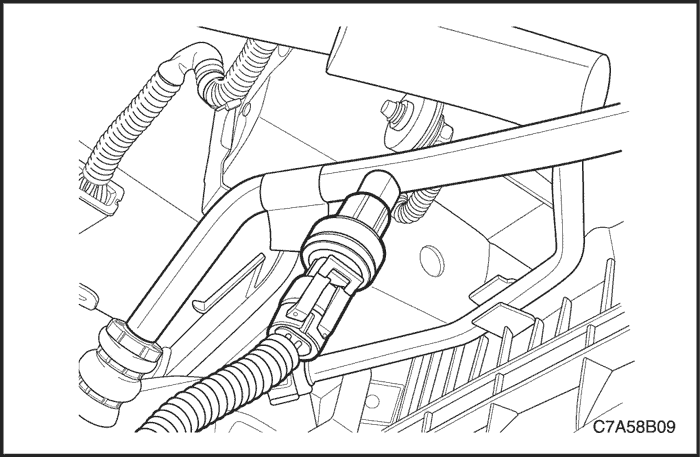


Transductor de presión A/C
Procedimiento de desmontaje
- Desconecte el cable negativo de la batería.
- Libere el cierre del conector y extraiga el conector del cable del transductor.
- Desmonte el transductor con una llave de apriete.
- Deseche la junta tórica.
procedimiento de montaje
- Monte una junta tórica nueva en el transductor.
- Monte el transductor de presión.
Apretar
Apriete el transductor de presión hasta 7 N•m (62 lb-pulg.).
- Enchufe el conector del cable.
- Conecte el cable negativo de la batería.
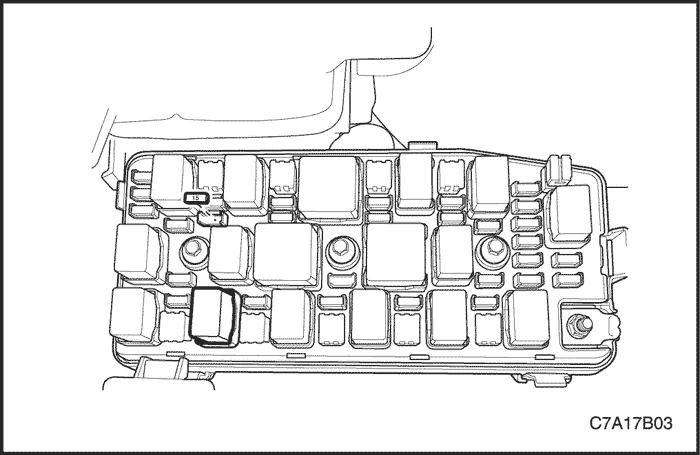
Relé del compresor de A/C
Procedimiento de desmontaje
- Desconecte el cable negativo de la batería.
- Tire del relé hacia arriba y extráigalo de su sitio en la caja de fusibles del motor en la esquina delantera izquierda.
procedimiento de montaje
- Alinee los contactos del terminal del relé con el receptáculo base.
- Empuje el relé en la base hasta que quede acoplado.
- Conecte el cable negativo de la batería.
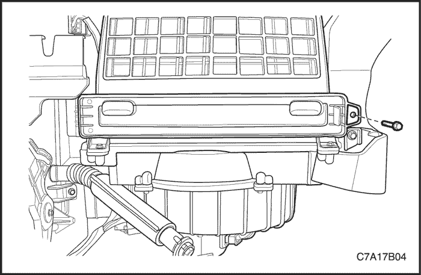
Filtro de aire
Procedimiento de desmontaje
- Desmonte la guantera. Consulte la Sección 9E, Instrumentación/información para el conductor.
- Quite los tornillos de la tapa del filtro de aire.
- Desmonte la tapa del filtro de aire.
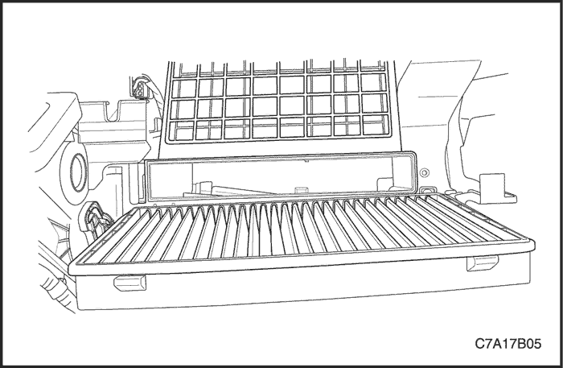
- Desmonte el filtro de aire.
procedimiento de montaje
- Monte el filtro de aire en su hueco en el tabique cortafuegos.
- Coloque la tapa del filtro de aire.
- Monte la guantera con sus tornillos.
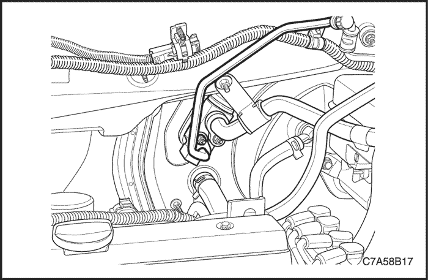
Válvula de expansión A/C
Procedimiento de desmontaje
- Quite las tuercas que sujetan el manguito de aspiración y los mazos de tubos del evaporador al tabique cortafuegos.
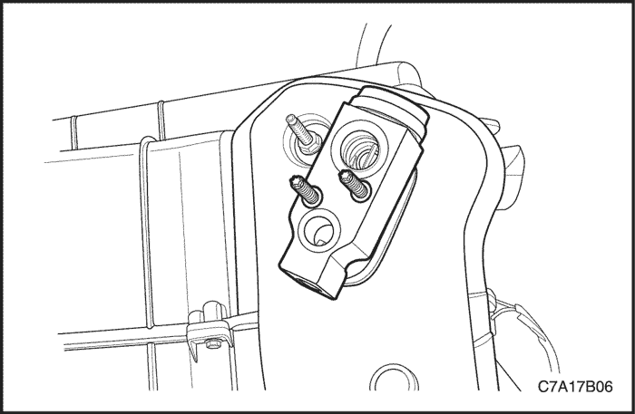
- Quite los tornillos de la válvula de expansión.
- Desmonte la válvula de expansión.
- Retire las juntas tóricas de las tuberías del evaporador.
procedimiento de montaje
- Limpie las superficies de las juntas tóricas para eliminar la suciedad o la contaminación.
- Coloque juntas tóricas nuevas en las tuberías del evaporador.
- Monte una válvula de expansión nueva en las tuberías del evaporador.
- Introduzca los tornillos de la válvula de expansión por dicha válvula en la superficie de fijación de la brida del evaporador.
Apretar
Apriete los tornillos de la válvula de expansión hasta 10 N• m (89 lb-pulg.).
- Coloque las tuercas que sujetan el manguito de aspiración y los mazos de tubos del evaporador al tabique cortafuegos.
Apretar
Apriete las tuercas de fijación del tubo del evaporador de líquido y del manguito de aspiración hasta 16 N•m (12 lb-pie).
Módulo del aire acondicionado
Procedimiento de desmontaje
- Desconecte el cable negativo de la batería.
- Desmonte el conjunto soporte del panel de instrumentos. Consulte la Sección 9E, Instrumentación/información para el conductor.
- Vacíe el sistema de refrigeración. Consulte la Sección 1D, Sistema de refrigeración del motor.
- Recupere el refrigerante. Consulte la Sección 7B, Sistema de calefacción, ventilación y aire acondicionado de control manual.
- Quite las tuercas que sujetan el manguito de aspiración y los mazos de tubos del evaporador al tabique cortafuegos.
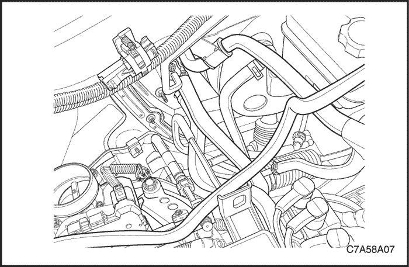
- Afloje los tornillos de las abrazaderas del manguito de aspiración y del tubo del evaporador de líquido para que el manguito y el tubo puedan moverse.
- Retire el manguito de drenaje del evaporador.
- Comprima las abrazaderas de las mangueras del calefactor en el tabique cortafuegos y deslice las abrazaderas hacia el motor.
- Retire las dos mangueras del calefactor de las tuberías del núcleo en el tabique cortafuegos.
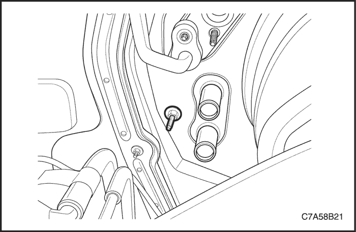
- Quite el tornillo del módulo del A/A, que está situado debajo de la válvula de expansión, del lado del compartimento motor del tabique cortafuegos.
- Haga que un ayudante sujete el módulo del A/A desde el interior del vehículo.
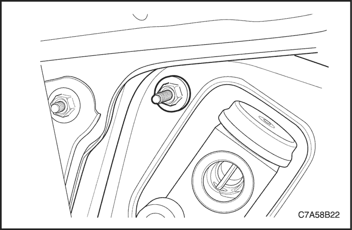
- Quite el tornillo del módulo de A/A de la brida del evaporador en el lado del compartimento motor del tabique cortafuegos. El módulo del A/A empezará a caer.
- Retire la carcasa inmediatamente del tabique cortafuegos.
- Desmonte el módulo del A/A del vehículo.
procedimiento de montaje
- Coloque el módulo del A/A en el vehículo.
Aviso: Para no dañar los tubos del núcleo del calefactor, asegúrese de que dichos tubos no entran en contacto con la abertura del tabique cortafuegos.
- Levante despacio el módulo del A/A en su posición y sujételo contra el tabique cortafuegos mientras se colocan y aprietan los tornillos desde el lado del motor del tabique cortafuegos.
- Alinee y coloque los tornillos del módulo del A/A encima del filtro de combustible y en la brida del evaporador.
Apretar
Apriete el tornillo del módulo del A/A hasta 8 N•m (71 lb-pulg.).
- Coloque el tornillo del módulo del A/A junto a las mangueras del calefactor.
Apretar
Apriete el tornillo del módulo del A/A hasta 8 N•m (71 lb-pulg.).
- Monte las dos mangueras del calefactor.
- Deslice las abrazaderas de las mangueras del calefactor en su posición.
- Monte el conjunto soporte del panel de instrumentos. Consulte la Sección 9E, Instrumentación/información para el conductor.
- Coloque juntas tóricas nuevas en el manguito de aspiración y el tubo del evaporador de líquido en el tabique cortafuegos y vuelva a poner los tubos en su sitio.
- Coloque las tuercas que sujetan el manguito de aspiración y los mazos de tubos del evaporador al tabique cortafuegos.
Apretar
Apriete las tuercas de fijación del tubo del evaporador de líquido y del manguito de aspiración hasta 16 N•m (12 lb-pie).
- Llene el sistema de refrigeración. Consulte la Sección 1D, Sistema de refrigeración del motor.
- Vuelva a cargar el sistema de A/A. Consulte la Sección 7B, Sistema de calefacción, ventilación y aire acondicionado de control manual.
- Conecte el cable negativo de la batería.
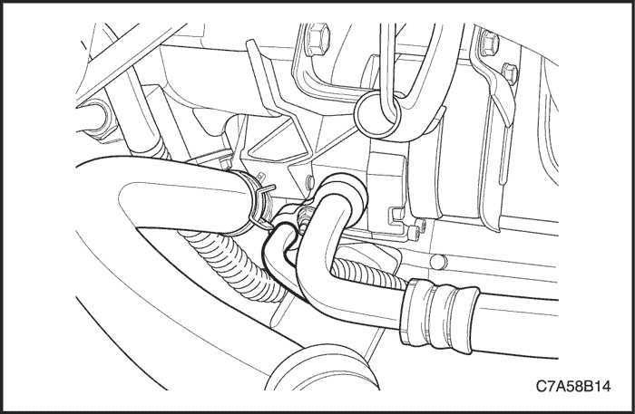
Tubería de alta presión de A/C
Procedimiento de desmontaje
- Desconecte el cable negativo de la batería.
- Recupere el refrigerante. Consulte el apartado "Procedimientos de descarga, adición de aceite, evacuación y carga para el sistema de aire acondicionado" de esta sección.
- Quite la tuerca del conector del manguito del compresor.
- Desenchufe el conector eléctrico del transductor de presión.
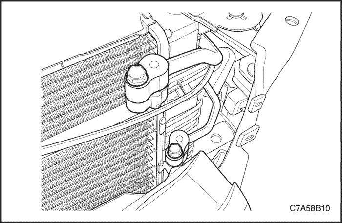
- Quite la tuerca del conector del condensador.
- Quite la tuerca de fijación que une el tubo de alta presión al condensador.
- Quite la tuerca de fijación del tubo de alta presión al conector de la brida del evaporador.
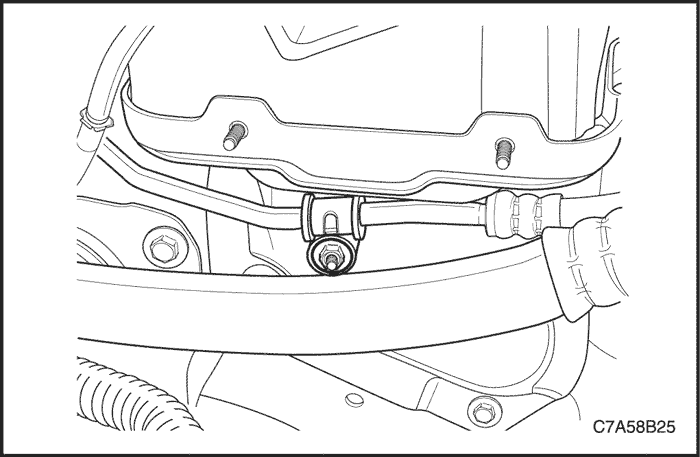
- Desmonte el vaso de compensación. Consulte la Sección 1D, Sistema de refrigeración del motor.
- Quite las tuercas de fijación del soporte del ECM.
- Quite el tornillo y la tuerca que sujetan las abrazaderas de fijación del tubo de alta presión al vehículo.
- Desmonte el tubo de alta presión del vehículo
procedimiento de montaje
- Coloque el tubo de alta presión en el vehículo
- Coloque las tuercas de fijación del soporte del ECM.
Apretar
Apriete las tuercas de fijación del soporte del ECM hasta 15 N•m (11 lb-pie).
- Monte una junta tórica nueva en el tubo del condensador.
- Coloque la tuerca de fijación del tubo de alta presión al conector del condensador.
Apretar
Apriete la tuerca de fijación del tubo de alta presión al conector del condensador 14 N•m (10 lb-pie).
- Coloque la tuerca del conector del condensador.
Apretar
Apriete la tuerca del conector del condensador hasta 16 N•m (12 lb-pie).
- Coloque la tuerca de fijación del tubo de alta presión al conector de la brida del evaporador.
Apretar
Apriete la tuerca de fijación del tubo de alta presión al conector de la brida del evaporador hasta 16 N•m (12 lb-pie).
- Coloque la tuerca del conector del manguito del compresor.
Apretar
Apriete la tuerca del conector del manguito del compresor hasta 16 N•m (12 lb-pie).
- Coloque el tornillo y la tuerca que sujetan la abrazadera de fijación del tubo de alta presión al vehículo.
- Enchufe el conector eléctrico al transductor de presión.
- Monte el vaso de compensación. Consulte la Sección 1D, Sistema de refrigeración del motor.
- Conecte el cable negativo de la batería.
- Vacíe y vuelva a cargar el sistema de A/A. Consulte el apartado "Procedimientos de descarga, adición de aceite, evacuación y carga para el sistema de aire acondicionado" de esta sección.
Núcleo del calefactor
Procedimiento de desmontaje
- Desconecte el cable negativo de la batería.
- Desmonte el módulo del A/A. Consulte el apartado "Módulo del aire acondicionado" de esta sección.
- Desmonte el núcleo del calefactor de la carcasa. Consulte la Sección 7A, Sistema de calefacción y ventilación.
procedimiento de montaje
- Monte el núcleo del calefactor en la carcasa. Consulte la Sección 7A, Sistema de calefacción y ventilación.
- Monte el módulo del A/A. Consulte el apartado "Módulo del aire acondicionado" de esta sección.
- Llene el sistema de refrigeración. Consulte la Sección 1D, Sistema de refrigeración del motor.
- Conecte el cable negativo de la batería.
- Vacíe y vuelva a cargar el sistema de A/A. Consulte el apartado "Procedimientos de descarga, adición de aceite, evacuación y carga para el sistema de aire acondicionado" de esta sección.
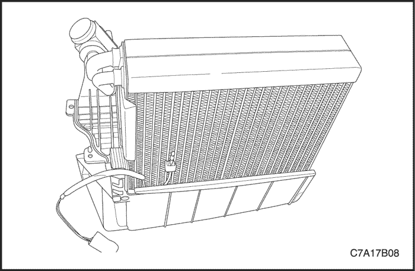
Termistor
Procedimiento de desmontaje
- Desmonte la tapa de la carcasa del núcleo del evaporador. Consulte el apartado "Núcleo del evaporador" de esta sección.
- Extraiga el termistor del evaporador.
procedimiento de montaje
- Monte el termistor en el evaporador.
- Monte la tapa de la carcasa del núcleo del evaporador. Consulte el apartado "Núcleo del evaporador" de esta sección.
- Monte el módulo del A/A. Consulte el apartado "Módulo del aire acondicionado" de esta sección.
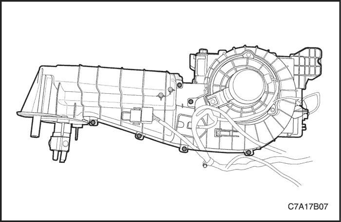
Núcleo de evaporador
Procedimiento de desmontaje
- Desmonte el módulo del A/A. Consulte el apartado "Módulo del aire acondicionado" de esta sección.
- Desmonte el núcleo del calefactor. Consulte la Sección 7A, Sistema de calefacción y ventilación.
- Quite los tornillos que sujetan las dos mitades de la carcasa del evaporador.
- Desmonte la tapa de la carcasa del núcleo del evaporador.
- Desmonte el núcleo del evaporador de la carcasa.
- Desmonte la válvula de expansión del aire acondicionado. Consulte el apartado "Válvula de expansión del aire acondicionado " de esta sección.
- Desmonte el termistor. Consulte el apartado "Termistor" de esta sección.
procedimiento de montaje
- Coloque las juntas tóricas en los tubos del evaporador.
- Monte la válvula de expansión del aire acondicionado. Consulte el apartado "Válvula de expansión del aire acondicionado " de esta sección.
- Monte el termistor. Consulte el apartado "Termistor" de esta sección.
- Monte el núcleo del evaporador en la carcasa. Centre la brida del evaporador en la abertura de la carcasa.
- Ensamble las dos mitades de la carcasa del evaporador con sus tornillos.
- Monte el conjunto de la caja del distribuidor de aire/calefactor. Consulte el apartado "Válvula de expansión del aire acondicionado " de esta sección.
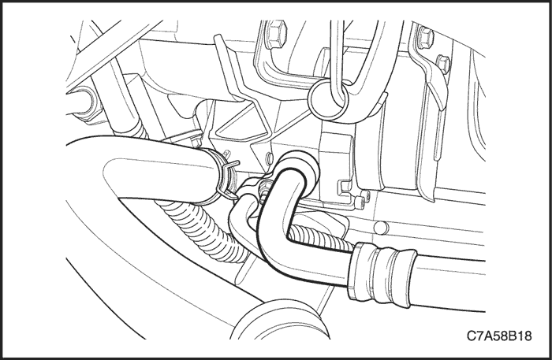
Conjunto de mangueras de aspiración de A/C
Procedimiento de desmontaje
- Desconecte el cable negativo de la batería.
- Descargue y recupere el refrigerante. Consulte el apartado "Procedimientos de descarga, adición de aceite, evacuación y carga para el sistema de aire acondicionado" de esta sección.
- Quite los tornillos de fijación del vaso de compensación.
- Desmonte el vaso de compensación.
- Quite la tuerca de fijación del racor del manguito y desconecte el racor del conjunto de manguito del aire acondicionado (A/A) de la parte trasera superior del compresor.
- Tape todas las aberturas para evitar la entrada de suciedad.
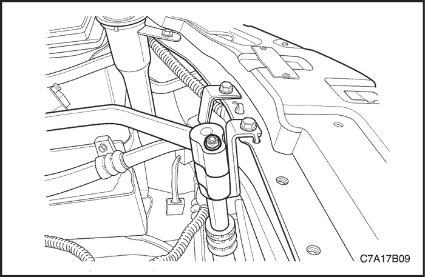
- Quite el tornillo de la abrazadera de soporte del manguito de aspiración y la abrazadera a lo largo del lado izquierdo del hueco del paso de rueda del compartimento motor.
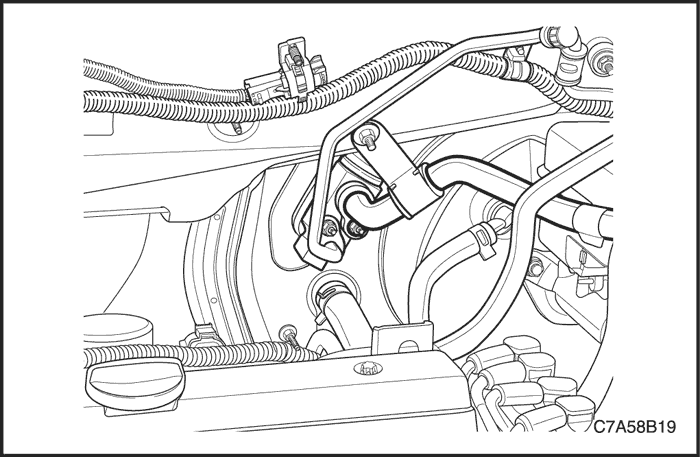
- Quite la tuerca de fijación del conector de la brida del evaporador y desconecte el manguito de aspiración del A/A en el conector de la brida del evaporador del tabique cortafuegos. Deseche la junta tórica.
- Desmonte el manguito de aspiración del A/A.
- Tape la abertura a la brida del evaporador para evitar que entre suciedad.
procedimiento de montaje
- Monte una junta tórica nueva en el extremo del manguito de aspiración en la brida del evaporador.
- Coloque en el vehículo el conjunto del manguito y de la abrazadera de soporte en su sitio.
- Introduzca el extremo del manguito de aspiración en la brida del evaporador.
- Coloque las tuercas de fijación del conector de la brida del evaporador.
Apretar
Apriete la tuerca de fijación del racor del manguito de aspiración hasta 16 N•m (12 lb-pie).
- Coloque arandelas de junta nuevas en los pilotos del racor de aspiración/descarga. Las arandelas debe estar acopladas contra la superficie del racor.
- Coloque la abrazadera de soporte del manguito de aspiración en el montante del lado izquierdo y apriete la tuerca de fijación de la abrazadera.
Apretar
Apriete la tuerca de fijación de la abrazadera de soporte del manguito de aspiración hasta 16 N•m (12 lb-pulg.).
- Acople el racor del manguito de descarga en el compresor. Sujételo en su sitio mientras aprieta la tuerca de fijación.
Apretar
Apriete la tuerca de fijación del racor del manguito de descarga al compresor hasta 16 N•m (12 lb-pie).
- Monte el vaso de compensación. Consulte la Sección 1D, Sistema de refrigeración del motor.
- Conecte el cable negativo de la batería.
- Vacíe y vuelva a cargar el sistema de A/A. Consulte el apartado "Procedimientos de descarga, adición de aceite, evacuación y carga para el sistema de aire acondicionado" de esta sección.
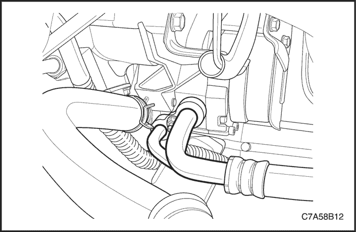
Compresor
Procedimiento de desmontaje
- Desconecte el cable negativo de la batería.
- Descargue y recupere el refrigerante. Consulte el apartado "Procedimientos de descarga, adición de aceite, evacuación y carga para el sistema de aire acondicionado" de esta sección.
- Quite la tuerca de fijación del manguito de descarga.
- Levante el bloque de fijación del manguito de descarga y el manguito de aspiración del compresor.
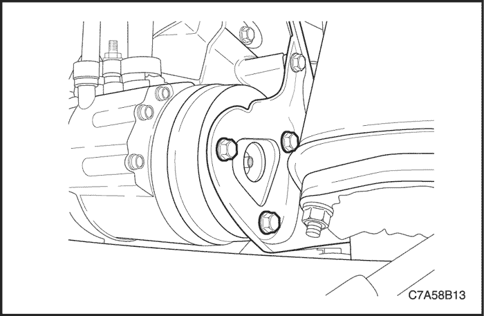
- Levante y apoye el vehículo adecuadamente.
- Desenchufe el conector eléctrico del compresor.
- Desmonte la correa de accionamiento y la polea loca. Consulte la sección 6B, Bomba de la dirección asistida.
- Desmonte el ventilador. Consulte la Sección 1D, Sistema de refrigeración del motor.
- Quite los tornillos de fijación de la parte trasera y delantera del compresor al soporte.
- Desmonte el compresor.
- Vacíe el aceite del compresor en un recipiente. Mida la cantidad de aceite que se ha vaciado. Deseche el aceite usado.
procedimiento de montaje
- Añada aceite al compresor nuevo. Utilice la misma cantidad de aceite que se vació del viejo compresor.
- Monte el compresor.
- Coloque los tornillos de fijación del compresor al soporte.
Apretar
Apriete los tornillos de fijación de la parte delantera del compresor al soporte hasta 23 N•m (17 lb-pie) (FAM II 2.4D).
Apriete los tornillos de fijación de la parte trasera del compresor al soporte hasta 23 N•m (17 lb-pie) (FAM II 2.4D).
Apriete los tornillos de fijación de la parte delantera del compresor al soporte hasta 50 N•m (37 lb-pie) (HFV6).
Apriete los tornillos de fijación de la parte delantera del compresor al soporte hasta 23 N•m (17 lb-pie) (VM2.0).
- Monte la polea loca y la correa de accionamiento de los accesorios. Consulte la sección 6B, Bomba de la dirección asistida.
- Monte el ventilador. Consulte la Sección 1D, Sistema de refrigeración del motor.
- Coloque arandelas de junta nuevas en la fijación del manguito de descarga y el manguito de aspiración.
- Enchufe el conector eléctrico en el compresor.
- Baje el vehículo.
- Coloque el manguito de aspiración en su hueco en el compresor y monte en su sitio el racor de fijación del manguito de descarga en la abrazadera. Sujételo todo junto mientras aprieta la tuerca de fijación.
Apretar
Apriete la tuerca de fijación del racor del manguito de descarga al compresor hasta 16 N•m (12 lb-pie).
- Conecte el cable negativo de la batería.
- Vacíe y vuelva a cargar el sistema de A/A. Consulte el apartado "Procedimientos de descarga, adición de aceite, evacuación y carga para el sistema de aire acondicionado" de esta sección.
Condensador
Procedimiento de desmontaje
- Desconecte el cable negativo de la batería.
- Descargue y recupere el refrigerante. Consulte el apartado "Procedimientos de descarga, adición de aceite, evacuación y carga para el sistema de aire acondicionado" de esta sección.
- Desmonte el radiador. Consulte la Sección 1D, Sistema de refrigeración del motor.
- Quite la tuerca de fijación del racor del manguito de descarga al condensador.
- Retire el manguito del condensador.
- Extraiga la tuerca de fijación del tubo de alta presión al conector del receptor-secador.
- Retire el tubo del condensador.
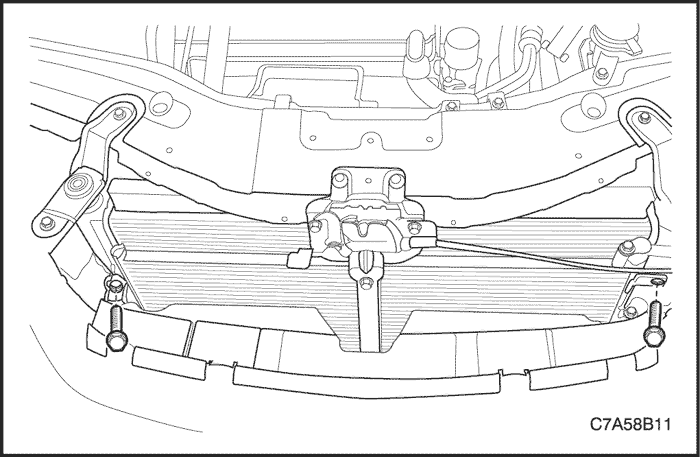
- Quite las tuercas superiores de fijación del condensador.
- Incline el condensador hacia atrás, en dirección opuesta al soporte de fijación del radiador.
- Levante el condensador y sáquelo del compartimento motor.
- Tape todas las tuberías abiertas y los racores para que no entre suciedad.
procedimiento de montaje
- Asegúrese de que los apoyos de goma del condensador están en su sitio.
- Monte el condensador en el vehículo. Los protectores de los amortiguadores inferiores deben encajar en los orificios que se facilitan.
- Desplace el condensador hacia delante en los orificios de fijación del soporte del radiador.
- Coloque las tuercas superiores de fijación del condensador y las arandelas.
Apretar
Apriete las tuercas superiores de fijación del condensador hasta 4 N•m (35 lb-pulg.).
- Coloque una junta tórica nueva en el racor de fijación del tubo de alta presión sobre el condensador.
- Coloque el tubo de alta presión en el condensador.
- Coloque la tuerca de fijación del tubo de alta presión al conector del condensador.
Apretar
Apriete la tuerca de fijación del tubo de alta presión al conector del condensador hasta 14 N•m (10 lb-pulg.).
- Coloque una junta tórica nueva en el racor del conector del manguito de descarga.
- Monte el racor del manguito de descarga en el condensador.
- Coloque la tuerca de fijación del racor del manguito de descarga al condensador y el conector del condensador.
Apretar
Apriete la tuerca de fijación del racor del manguito de descarga al condensador hasta 16 N•m (12 lb-pie).
- Monte el radiador. Consulte la Sección 1D, Sistema de refrigeración del motor.
- Vacíe y vuelva a cargar el sistema de A/A. Consulte el apartado "Procedimientos de descarga, adición de aceite, evacuación y carga para el sistema de aire acondicionado" de esta sección.
- Conecte el cable negativo de la batería.
- Accione el control del HVAC para verificar el funcionamiento adecuado de los sistemas de calefacción y refrigeración.
 | |  | |
| © Copyright Chevrolet Europe. Reservados todos los derechos |